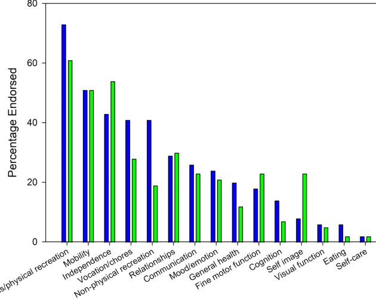

Mitchell Slapik
MD/PhD Candidate
McGovern Medical School
I am currently an MD/PhD student in the Medical Scientist Training Program at McGovern Medical School. I study computational neuroscience in Valentin Dragoi's lab, where I focus on how neural circuits process visual information.
Previously, I did research on the cerebellum in Cherie Marvel's lab at Johns Hopkins University, and studied philosophy at Swarthmore College and University of Oxford.
Ultimately, I plan to specialize in psychiatry and use machine learning to better understand and treat psychiatric disorders.
Outside of work, I volunteer at Crisis Text Line and play jazz saxophone in The Chirp Chirps and Bayou City Funk.
For more information, see my CV or Google Scholar.
2027
McGovern Medical School
MD
2025
University of Texas at Houston
PhD, Neuroscience
Advisor: Valentin Dragoi
2016
Johns Hopkins University
Post-Baccalaureate Premedical Program
Advisor: Cherie Marvel
2014
Swarthmore College
BA, High Honors, Philosophy
2013
University of Oxford
Study Abroad, Philosophy of Mind
Publications
- 
-

-

-

Music